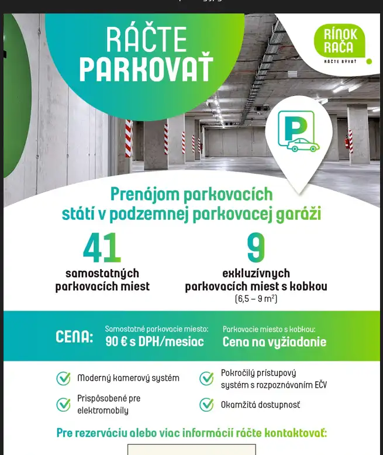

Parking Rínok Rača
Rača, Bratislava

- Plocha499 m²
- StavNovostavba
- Energetická triedaA
O nehnuteľnosti
Rínok Rača, nové obytné zelené centrum Rače s novootvorenou nákupnou promenádou, prináša svojim obyvateľom a návštevníkom ďalšiu výhodu - možnosť prenájmu parkovacích miest v podzemnej garáži. Tento krok nielen zlepšuje parkovaciu situáciu v oblasti, ale aj zvyšuje komfort bývania a nakupovania v tomto modernom komplexe.Detaily prenájmuV prvom kole prenájmu bude k dispozícii celkovo 50 parkovacích miest v interiéri garáže G2 Rínok Rača. Z toho:•41 samostatných parkovacích miest•9 parkovacích miest s priľahlou kobkou v rozlohe 6,5 – 9 m2Ceny a možnosti•Cena za samostatné parkovacie miesto je stanovená na 90 eur s DPH mesačne.•Pre záujemcov o parkovacie miesto s kobkou je cena stanovená individuálne. V prípade záujmu o túto exkluzívnu ponuku a pre bližšie informácie o cenách vás prosíme, aby ste kontaktovali našich predajcov.Výhody parkovania v Rínok Rača1.Bezpečnosť: Garáž je vybavená moderným kamerovým systémom, ktorý zabezpečuje nepretržitý dohľad nad vaším vozidlom.2.Prispôsobenie pre elektrické autá: Parkovacie miesta sú pripravené aj pre majiteľov elektrických vozidiel, čím podporujeme ekologickú dopravu.3.Bezpečný prístupový systém:oVstup do garáže je zabezpečený pomocou rozpoznávania EČV vozidla.oKaždý nájomca zároveň dostane prístupovú kartu pre prípad potreby.oPrvá rampa sa otvára automaticky po rozpoznaní EČV (alebo pomocou karty).oNa ďalších rampách v objekte je potrebné priložiť kartu.4.Okamžitá dostupnosť: Prenájom parkovacích miest je už k dispozícii, takže nemusíte čakať na zabezpečenie svojho parkovacieho miesta.Kontaktujte násPre rezerváciu parkovacieho miesta alebo získanie ďalších informácií nás neváhajte kontaktovať:•Viktor Rusňák: +421 918 341 564, rusnak@bencontd.sk
Parametre
- Druh
- Garáž
- Dátum zverejnenia
- 18. 12. 2024
- Elektrina
- Nedostupné
- Energetický certifikát budovy
- A
- Odpadové vody
- Nedostupné
- Plyn
- Nedostupné
- Počet nadzemných podlaží
- 5
- Rok výstavby
- 2023
- Stav nehnuteľnosti
- Novostavba
- Typ
- Prenájom
- Typ konštrukcie
- Železobetónová
- Voda
- Nedostupné
- Zastavaná plocha
- 500 m²
- Úžitková plocha
- 499 m²